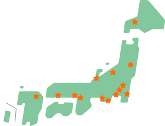

試験概要
2025年 第54回
 第54回 食生活アドバイザー®検定試験
第54回 食生活アドバイザー®検定試験
3級・2級 予定表
※払込取扱票とクレジット申込ではスケジュールが異なります。
ゆうちょ銀行・郵便局の払込取扱票申込のスケジュール
| 試験日 | 第54回 2025年11月23日(日) |
|---|---|
| 願書請求期間 （申込登録期間） |
2025年9月16日(火) 終了しました。 |
| 受験申込期間 （受験料払込期間） |
2025年9月26日(金) 終了しました。 |
| 受験申込締切日 （払込期限日） |
2025年9月26日(金) 終了しました。 |
| 受験票発送日 | 2025年11月10日(月) |
| 受験票 未着問合せ期間 |
2025年11月18日(火)・19日(水)10:00～16:00 |
| 合否通知 発送日 |
2025年12月16日(火) |
| 合否通知 未着問合せ期間 |
2026年1月8日(木)・9日(金)10:00～16:00 |
クレジットカード申込のスケジュール
| 試験日 | 第54回 2025年11月23日(日) |
|---|---|
| 受験申込期間 （受験料払込期間） |
2025年10月6日(月) 終了しました。 |
| 受験申込締切日 （払込期限日） |
2025年10月6日(月) 終了しました。 |
| 受験票発送日 | 2025年11月10日(月) |
| 受験票 未着問合せ期間 |
2025年11月18日(火)・19日(水)10:00～16:00 |
| 合否通知 発送日 |
2025年12月16日(火) |
| 合否通知 未着問合せ期間 |
2026年1月8日(木)・9日(金)10:00～16:00 |
※詳細は各回の受験案内をご確認ください。
受験資格
受験の制限はありません。
食生活に興味のある方ならどなたでも受験できます。
食生活に興味のある方ならどなたでも受験できます。
受験会場
- （2025年第54回開催都市）
- 札幌：札幌市内
- 仙台：仙台市内
- さいたま：さいたま市内
- 千葉：千葉市内
- 東京：東京23区内
- 横浜：横浜市内
- 新潟：新潟市内
- 金沢：金沢市内
- 静岡：静岡市内
- 名古屋：名古屋市内
- 大阪：大阪市内
- 神戸：神戸市内
- 広島：広島市内
- 福岡：福岡市内

- 注意
- 受験会場は受験票でご確認ください。
試験開始時間
3級：10時30分 2級：13時30分
試験時間
3級・2級ともに90分
受験料（各税込）
3級 5,500円
2級 8,000円
3級・2級併願 13,500円
2級 8,000円
3級・2級併願 13,500円
受験科目（3級・2級共通）
- 栄養と健康
（栄養・病気予防・ダイエット・運動・休養など) - 食文化と食習慣
（行事食・旬・マナー・配膳・調理・献立など） - 食品学
（生鮮食品・加工食品・食品表示・食品添加物など） - 衛生管理
（食中毒・食品衛生・予防・食品化学・安全性など） - 食マーケット
（流通・外食・中食・メニューメイキング・食品販売など） - 社会生活
（消費経済・生活環境・消費者問題・IT社会・関連法規など)
出題形式
- 3級理論問題
・選択問題（マークシート形式 50問） - 2級理論問題
・選択問題（マークシート形式 42問）
・記述式問題（13問）
合格基準
3級：1問2点 合格点60点以上
（100点満点）
2級：選択問題1問2点・記述問題1問3点
合格点74点以上
（123点満点）
（100点満点）
2級：選択問題1問2点・記述問題1問3点
合格点74点以上
（123点満点）
第54回 食生活アドバイザー®検定試験 1級 予定表
※払込取扱票とクレジット申込ではスケジュールが異なります。
ゆうちょ銀行・郵便局の払込取扱票申込のスケジュール
スケジュールは、3級・2級と同じです。
詳しはこちら
クレジットカード申込のスケジュール
スケジュールは、3級・2級と同じです。
詳しはこちら
※詳細は各回の受験案内をご確認ください。
受験資格
食生活アドバイザー®︎2級 有資格者
受験会場
（2026年第55回開催都市）
- 東京：東京23区内
- 名古屋：名古屋市内
- 大阪：大阪市内
- 福岡：福岡市内
- 注意
- 受験会場は受験票でご確認ください。
試験開始時間
1級：13時30分
試験時間
1級：90分
受験料（各税込）
1級：10,000円
受験科目（1級）
- 栄養と健康
（栄養・病気予防・ダイエット・運動・休養など) - 食文化と食習慣
（行事食・旬・マナー・配膳・調理・献立など） - 食品学
（生鮮食品・加工食品・食品表示・食品添加物など） - 衛生管理
（食中毒・食品衛生・予防・食品化学・安全性など） - 食マーケット
（流通・外食・中食・メニューメイキング・食品販売など） - 社会生活
（消費経済・生活環境・消費者問題・IT社会・関連法規など)
出題形式
- 1級理論問題
・選択問題（マークシート形式 42問）
・記述式問題（13問）
合格基準
1級：選択問題 1問2点 記述問題1問3点
［選択］28題以上正解かつ［筆記］8題以上正解
合計36題以上正解で合格
［選択］28題以上正解かつ［筆記］8題以上正解
合計36題以上正解で合格
公式テキスト
2026年4月発刊（全国の書店・ECサイトにて販売されます）
普段から『食』と『生活』に
関心を持つことから始まります。
食生活を総合的に見直す幅広い見識を持ち、的確な指導やアドバイスをするスペシャリストが食生活アドバイザー®。したがって、その出題範囲も広くて当然。「どこから手をつけていいのかわからない」という人も多いはず。しかし、そのほとんどが生活に密着した内容なので、まずはご自身の『食生活』ときちんと向き合い、見直すことからスタートしてはいかがでしょうか。そして社会で起きている「食」に関するニュースや、身の回りで起こる健康に関する問題に関心を持ち、その都度調べてみる。暗記型の学習だけではなく、このような活きた楽しい学習がレベルアップの秘訣です。